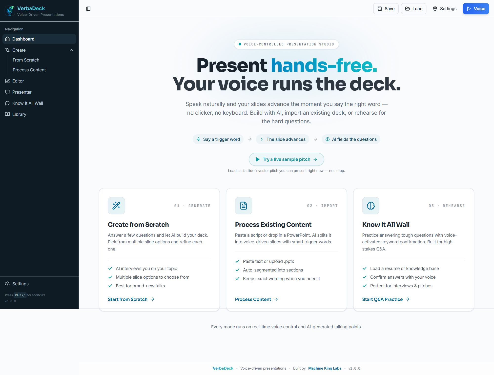
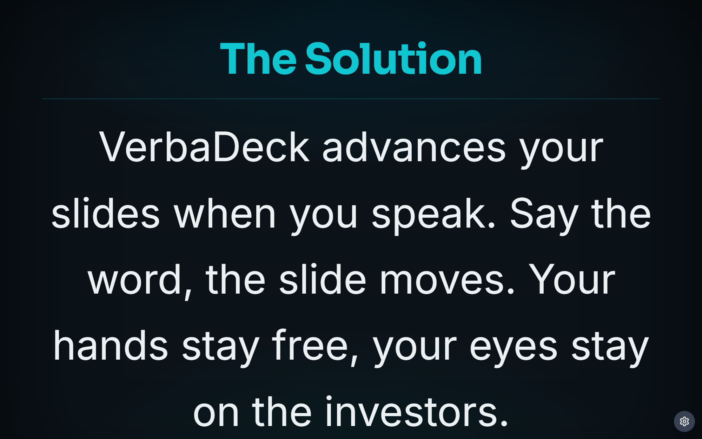
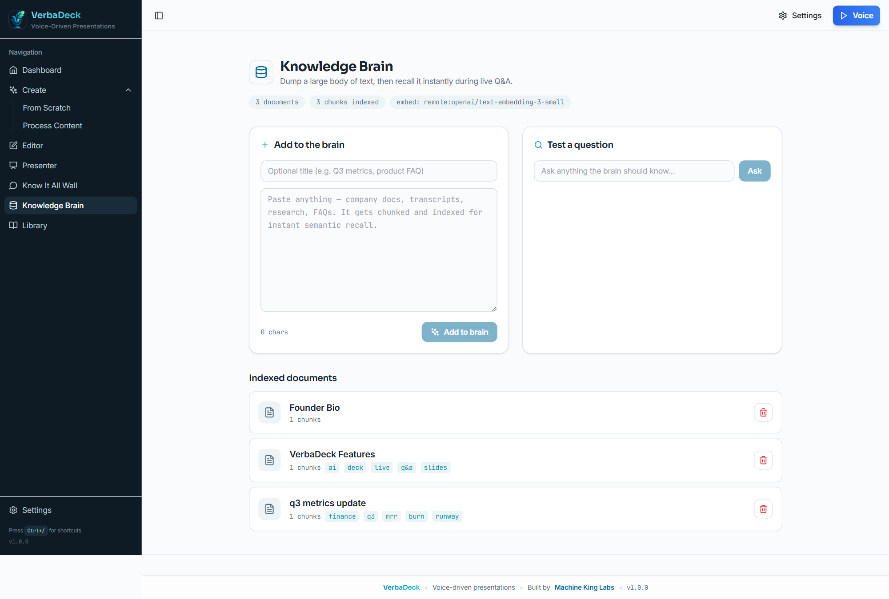
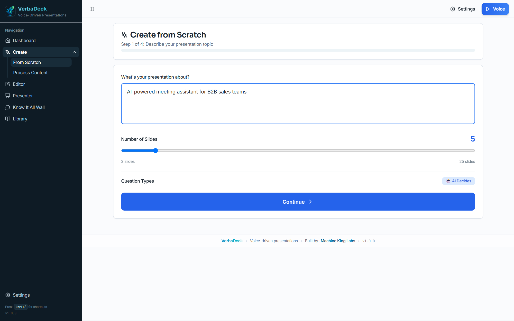

Promo storyboard · v1.1.0
Present hands-free. 45-second cut.
Spine: Your voice runs the deck, and AI answers the room. Every beat serves that one idea.
1 · Hook0:00–0:06
Generated b-roll
Boardroom pitch — a founder reaching for the clicker mid-sentence, the room slipping away. Cool light, dark tones, teal rim.
Every founder loses the room the second they reach for a clicker. Eyes drop. Momentum dies.
Generated
2 · Reveal0:06–0:10

VerbaDeck · “hands-free”
VerbaDeck flips it. Present hands-free — your voice runs the deck.
Real frame
3 · Voice0:10–0:16

Say “problem” → advance
Say a trigger word, and the slide moves. Your hands and your eyes stay on the room.
Real frame
4 · Two screens0:16–0:22

Audience view · Presenter view (inset)
Your audience sees a clean, cinematic slide. You get a cockpit — timer, cues, what's next.
Real frame
5 · Live answers0:22–0:30

Live Q&A · Knowledge Brain
Hit a hard question? It answers live, from your own deck — and from everything you've loaded into its Knowledge Brain.
Real frame · the peak
6 · Build it0:30–0:36

Build · Import · Rehearse · open-source
Build with AI, import a PowerPoint, or rehearse the tough questions. Open-source, and yours in five minutes.
Real frame
7 · Payoff0:36–0:39
Generated b-roll
Speaker mid-talk, both hands open, audience leaning in — the clicker left untouched on the table. Warm key, teal stage edge.
Hands free. Eyes up. Retire the clicker.
Generated
8 · CTA0:39–0:42
VerbaDeck
Present hands-free.
verbadeck.com
VerbaDeck — present at verbadeck.com.
Composed end card